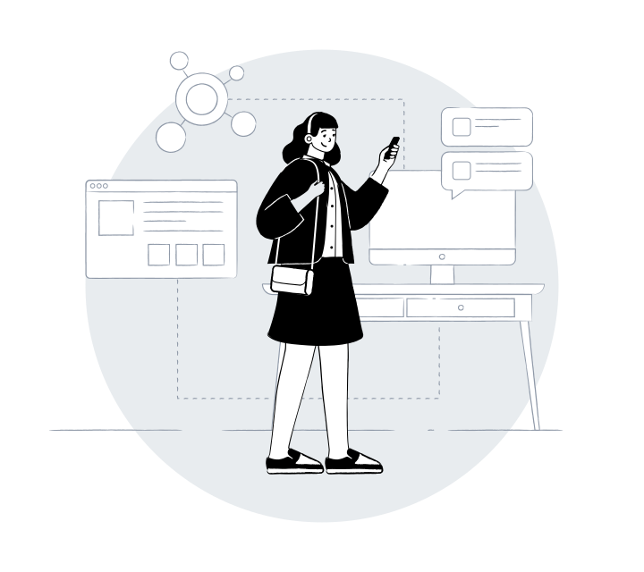

PORTOFOLIO
Dewi Yuni Zainah
Fresh Graduate Sistem Informasi | UI/UX Designer | Web
Development.
Mahasiswa/Lulusan Sistem Informasi yang memiliki ketertarikan pada
pengembangan sistem berbasis web dan analisis sistem. Terbiasa
mengerjakan project website, sistem kasir, dan aplikasi sederhana
mulai dari analisis kebutuhan, perancangan database, hingga
implementasi dan pengujian sistem.
